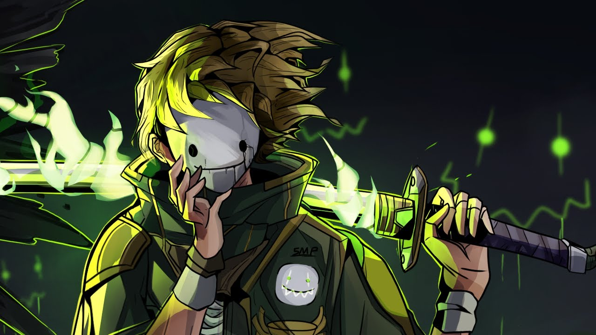

DREAM
Dream, cujo nome verdadeiro é Clay, nasceu nos Estados Unidos e começou sua jornada no YouTube em 2014, mas foi só em 2019 que ele explodiu. O que parecia ser apenas mais um jogador se revelou um gênio da estratégia, edição e narrativa dentro do Minecraft. Ele não apenas jogava — ele criava experiências cinematográficas dentro de um mundo de blocos.
Tudo começou com suas speedruns. Dream era obcecado por eficiência. Ele estudava cada detalhe do jogo — spawn rates, probabilidade de drops, localização de estruturas, movimentação de mobs — até atingir um nível quase sobre-humano de conhecimento técnico. Em suas corridas para zerar o Minecraft, executava estratégias tão calculadas que pareciam coreografadas.
Mas o grande divisor de águas foi sua criação mais famosa: “Minecraft Manhunt”. A ideia parecia simples: Dream tentava zerar o jogo enquanto um ou mais caçadores (seus amigos Sapnap, GeorgeNotFound, BadBoyHalo e outros) tentavam impedi-lo. O que o diferenciou não foi o conceito, mas a maneira como transformou cada partida em um filme de ação interativo.
As edições eram impecáveis — com cortes rápidos, câmeras dinâmicas e trilhas sonoras dignas de cinema. Cada vídeo era uma montanha-russa de emoção, com Dream escapando de armadilhas impossíveis, usando truques que ninguém jamais havia tentado antes: saltos com barcos em lava, clutchs com pérolas do End, manobras com camas explosivas… Ele elevou o nível técnico e criativo do Minecraft a um novo patamar.
O sucesso foi estrondoso. Em poucos meses, o canal de Dream saltou de alguns milhares para milhões de inscritos, alcançando mais de 2 bilhões de visualizações. Ele se tornou o símbolo de uma nova era do Minecraft — uma era em que o jogo era competição, história, adrenalina e arte visual ao mesmo tempo.
Mas Dream não parou aí. Em 2020, criou o Dream SMP, um servidor privado que se transformou em um fenômeno mundial. Nele, jogadores famosos como TommyInnit, Wilbur Soot, Tubbo, Quackity, Schlatt e vários outros criaram personagens e enredos complexos dentro do Minecraft, misturando humor, drama, política e até filosofia. A trama do servidor virou uma espécie de “série interativa”, com milhões de fãs acompanhando cada episódio ao vivo.
Dream se tornou uma figura polêmica e enigmática — evitando mostrar o rosto por anos e sendo alvo de críticas e controvérsias (especialmente por suspeitas de manipulação em uma de suas speedruns). Mesmo assim, sua genialidade é inegável. Ele reinventou o conteúdo de Minecraft, provando que o jogo podia ser tão intenso quanto um filme de ação ou uma novela.
Dream é o estrategista, o arquiteto da tensão, o homem que fez o Minecraft renascer e que inspirou uma geração inteira de criadores a ver o jogo não apenas como diversão — mas como uma forma de arte digital.h4>
TECHNOBLADE
Technoblade, nome verdadeiro Alex, nasceu em 1999 e se tornou sinônimo de habilidade, humor e humanidade dentro do Minecraft. Desde seus primeiros vídeos, ele mostrou ser diferente. Enquanto outros buscavam visuais chamativos ou edições elaboradas, Technoblade apostava em algo simples: habilidade absurda e comentários brilhantes.
Sua fama começou no servidor Hypixel, onde ele dominava minigames como Skywars, Bedwars e The Pit. Suas jogadas eram tão precisas que pareciam coreografadas — reflexos quase instantâneos, leitura perfeita dos movimentos dos adversários e estratégias calculadas até o último bloco. Ele era conhecido como o jogador que nunca perdia o controle.
O humor de Technoblade também o tornava único. Ele comentava suas partidas com ironia, sarcasmo e uma calma quase fria, mesmo em situações de extremo perigo. Essa combinação — frieza e humor — fez com que ele se tornasse um ícone carismático e inesquecível.
Quando entrou no MC Championships e em eventos como o Minecraft Monday, Technoblade consolidou seu título de “melhor PvP player do mundo”. Seu duelo mais lendário aconteceu em 2020, contra Dream, em um confronto transmitido para milhões de espectadores. Foi uma batalha equilibrada, quase simbólica: o estrategista contra o guerreiro. Technoblade venceu, mas ambos saíram imortalizados.
Porém, o verdadeiro legado de Technoblade não está nas vitórias — está na forma como viveu e inspirou. Em 2021, ele revelou publicamente estar lutando contra um câncer agressivo. Mesmo assim, continuou produzindo vídeos, fazendo piadas sobre a doença e mantendo o mesmo espírito positivo. Em julho de 2022, veio a notícia que abalou o mundo: Technoblade havia falecido, aos 23 anos.
Antes de partir, deixou um vídeo final, gravado por seu pai, intitulado “So Long, Nerds”, no qual agradeceu aos fãs por todo o apoio e encerrou com a frase que se tornaria eterna:
🕊️ “Technoblade never dies.”
Essa frase se tornou um símbolo. Dentro e fora do Minecraft, ela representa resiliência, humor e humanidade. O Minecraft inteiro parou para homenageá-lo — monumentos foram erguidos, mundos foram decorados, e a Mojang adicionou homenagens secretas ao jogo.
Technoblade é mais do que um jogador. Ele é o espírito do Minecraft: o guerreiro que nunca desistiu, o amigo que sempre fez rir, e o herói que, mesmo partindo, nunca morre.
VINICCIOS13
Entre os gigantes do Minecraft técnico, Viniccius13 reina com tranquilidade. Enquanto a maioria dos youtubers se destaca pelo carisma ou pelas aventuras, ele construiu um império de conhecimento, precisão e inteligência dentro do jogo.
Seu estilo é único: calmo, metódico e incrivelmente detalhista. Ele é o tipo de jogador que passa horas planejando um sistema antes de colocar o primeiro bloco. O resultado são criações monumentais — cidades automáticas, sistemas de redstone ultracomplexos e farms que funcionam com eficiência milimétrica.
Com séries como “Mundo Automático”, “Hardcore” e “O Novo Mundo”, Viniccius13 mostrou que o Minecraft pode ser uma ferramenta de engenharia e ciência. Ele explica cada passo com clareza, tornando o conteúdo acessível até para quem nunca ouviu falar de redstone.
Seu diferencial está na organização e perfeccionismo. Nenhum bloco está fora do lugar; tudo tem uma lógica e uma estética. Ele planeja como um arquiteto, constrói como um engenheiro e explica como um professor.
Mas por trás da técnica existe também carisma. Viniccius13 conquistou respeito mundial não por exageros, mas por consistência. Ele é o exemplo do jogador que domina o jogo de verdade — que entende suas regras e as dobra com inteligência.
Hoje, é reconhecido como o maior jogador técnico do Brasil e um dos maiores do mundo. Muitos o consideram o “Einstein do Minecraft” — o homem que provou que o jogo é tão infinito quanto a imaginação humana.
REZENDEEVIL
O nome Pedro Afonso Rezende, ou simplesmente RezendeEvil, está gravado entre os maiores da história do Minecraft mundial — e sem dúvida entre os maiores criadores de conteúdo da história do Brasil.
Se Dream reinventou o Minecraft globalmente, Rezende reinventou o Minecraft brasileiro.
Ele não apenas jogou: ele construiu um universo narrativo inteiro dentro do jogo, transformando blocos, pixels e mobs em personagens com alma, emoção e propósito.O sucesso veio com séries que se tornaram lendárias na história do YouTube:
A Lenda de Herobrine – Um clássico absoluto. Rezende transformou o mito do Herobrine (uma lenda urbana entre os fãs do Minecraft) em uma saga de terror e mistério. Cada episódio tinha suspense, trilha sonora e enredos cheios de reviravoltas.
Escola Monstro – Misturava comédia, aventura e fantasia, com personagens dublados e histórias que lembravam desenhos animados.
Vida Real no Minecraft – Um marco. Ele trouxe o mundo real para dentro do jogo, simulando situações cotidianas, emoções humanas e relações entre personagens.
Essas séries não eram apenas vídeos: eram eventos culturais. Milhões de crianças e adolescentes esperavam ansiosas pelos novos episódios, comentavam, criavam fanarts e imitavam os personagens. Rezende conseguiu o que poucos conseguiram: transformar o Minecraft em uma plataforma de ficção episódica, como uma novela interativa dentro do YouTube.
Sua forma de atuação era única. Ele tratava o Minecraft como um palco, e seus vídeos tinham ritmo de cinema: introdução, conflito, clímax e conclusão. Era uma fusão de roteiro, improviso e emoção, o que tornava cada série envolvente.Com o passar dos anos, Rezende expandiu seu universo para fora do Minecraft. Criou uma produtora própria, lançou livros, fez filmes, músicas e séries com atores reais, sempre mantendo o mesmo espírito de criatividade e trabalho duro.
Seus livros, como “De Volta ao Jogo” e “Dois Mundos, Um Herói”, foram sucessos de vendas, mostrando que seu público o acompanhava até fora do YouTube.
Ele também participou de produções para a televisão e plataformas digitais, mostrando que seu talento ia muito além do Minecraft — ele era, de fato, um artista multimídia.
Mesmo assim, Rezende nunca deixou de reconhecer suas origens. Em várias entrevistas, ele afirmou que tudo começou no Minecraft — que foi o jogo que lhe deu voz, público e propósito.
Ele criou um estilo de conteúdo que inspirou nomes como Jazzghost, AuthenticGames e até canais internacionais.Rezende foi mais do que um criador: foi um formador de gerações.
Crianças que assistiram suas séries entre 2013 e 2017 cresceram com ele como uma figura constante — um “irmão mais velho” que vivia aventuras dentro do jogo. Ele trouxe o conceito de continuidade: o público acompanhava as histórias como se fossem temporadas de uma série de TV.
Além disso, ele consolidou o Minecraft como um instrumento de narrativa brasileira. Antes dele, o jogo era visto apenas como uma ferramenta de construção e sobrevivência. Depois dele, virou um cenário de ficção, com roteiros, trilhas e personagens cativantes.
Ele também ajudou a profissionalizar o conteúdo de Minecraft no Brasil. Seu estúdio, roteiros e produção eram elaborados, e isso influenciou toda a cena de YouTube brasileira. Muitos criadores passaram a investir em roteiros, dublagens e efeitos, inspirados pelo formato de Rezende.
Mesmo após anos, o nome “RezendeEvil” ainda desperta nostalgia. Para milhões, ele representa a infância, os tempos simples de 2013–2015, quando o YouTube era pura diversão e o Minecraft era o portal da imaginação.
JAZZGHOST
Jazzghost, cujo nome verdadeiro é Luiz Fernando de Moraes, é um dos nomes mais respeitados, criativos e queridos do Minecraft no Brasil. Diferente de muitos que focavam apenas na diversão ou na aventura, Jazzghost construiu sua fama através de um talento raro: a capacidade de transformar o Minecraft em uma obra de arte. Se RezendeEvil foi o mestre das histórias e VenomExtreme o pioneiro da emoção, Jazzghost foi o arquiteto da beleza, o jogador que mostrou que blocos também podem expressar estética, harmonia e sensibilidade.
Sua jornada começou por volta de 2012, quando o Minecraft já começava a ganhar força no YouTube brasileiro. Ainda assim, o cenário era dominado por vídeos de sobrevivência, desafios ou humor. Jazzghost, porém, sempre teve um olhar diferente. Desde o início, ele demonstrava um gosto refinado pelo visual, pela construção e pela criatividade. Seus vídeos chamavam atenção pelo cuidado com cada detalhe, pela iluminação dos mapas, pelo design das casas e pela atmosfera que conseguia criar dentro do jogo. Ele não via o Minecraft apenas como um jogo, mas como uma ferramenta de expressão artística.
Com o tempo, seu canal cresceu, impulsionado por seu carisma e sua voz calma e carismática. O público se encantava com a forma como ele narrava suas experiências: de maneira leve, divertida e ao mesmo tempo inspiradora. Jazzghost falava como um amigo, alguém que convidava o espectador a entrar em seu mundo e construir junto. Ele valorizava a imaginação acima de tudo — e isso o tornou único. Enquanto muitos youtubers buscavam adrenalina, ele buscava emoção e beleza.
Jazzghost foi o criador de algumas das séries mais icônicas do Minecraft brasileiro. Entre elas, se destacam Vida no Minecraft, A Vida de um Herói, Vida Escolar e as séries de Mods de Sobrevivência, que marcaram gerações de jogadores. Cada uma delas tinha algo em comum: um toque pessoal e emocional. Ele sempre transmitia mensagens de amizade, perseverança e criatividade, tornando seus vídeos não apenas divertidos, mas também inspiradores. Seus fãs, que o acompanham há mais de uma década, cresceram ouvindo suas risadas, suas reflexões e sua forma gentil de se expressar.
Um dos traços mais marcantes de Jazzghost é sua capacidade de se reinventar. Mesmo depois de tantos anos produzindo conteúdo, ele nunca perdeu a vontade de inovar. Ele explora novos estilos, cria universos próprios e traz ideias originais. Em um mundo digital cheio de modas passageiras, Jazzghost permaneceu relevante por saber evoluir sem perder sua essência. Sua autenticidade é o que o mantém querido até hoje. Ele não tenta ser o mais engraçado, o mais radical ou o mais popular — ele simplesmente é ele mesmo, e isso basta.
Outro aspecto fundamental do sucesso de Jazzghost é sua relação com os fãs. Ele sempre manteve uma conexão sincera com seu público, especialmente com os jovens que o acompanham desde a infância. Muitos cresceram vendo seus vídeos e o enxergam como uma figura positiva, calma e acolhedora. Em um cenário de internet muitas vezes marcado por polêmicas e exageros, Jazzghost se manteve um exemplo de respeito e maturidade. Sua presença transmite tranquilidade — ele é aquele criador que você assiste para relaxar, se inspirar e se sentir bem.
Além disso, Jazzghost é conhecido por seu talento com construções. Ele domina o design de interiores, a arquitetura e o uso de texturas dentro do Minecraft de forma impressionante. Suas casas, cidades e mundos personalizados são tão bem elaborados que muitos fãs tentam reproduzi-los em seus próprios mapas. É comum ver pessoas dizendo que começaram a construir no Minecraft por causa dele. Em certo sentido, Jazzghost ajudou a criar uma geração de jogadores artistas, pessoas que aprenderam que o jogo não é apenas sobre sobreviver, mas sobre criar algo bonito e significativo.
Com o passar dos anos, ele também expandiu seu trabalho para outros jogos e projetos, mas sem nunca abandonar o Minecraft — o jogo que o tornou uma lenda. Ele participou de eventos, colaborou com outros criadores e continuou produzindo conteúdo de qualidade, sempre com o mesmo cuidado e dedicação. Sua longevidade no YouTube é uma prova de que o talento verdadeiro não depende de modas, e sim de paixão e autenticidade.


.jpg)
.jpg)